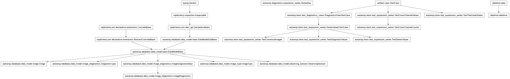
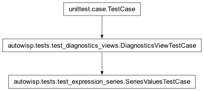
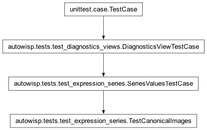
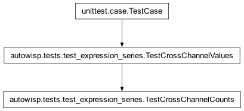
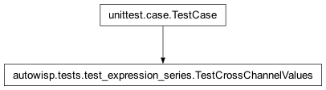
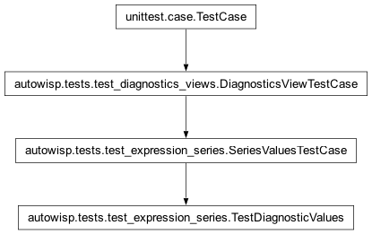
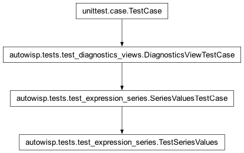
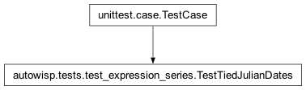

autowisp.tests.test_expression_series module
Class Inheritance Diagram

Tests for reading one series’ values out of the project database.
These cover tier 2 of the expression layer: the part that knows the project
database but not Django, and turns a SeriesKey into the
{name: array} tier 1 evaluates against. What is asserted here is
mostly alignment – that index i means the same image in every array –
because every other property in the design rests on it and a violation of
it produces a plot that looks entirely reasonable and is wrong.
The two-night fixture is the one test_diagnostics_views builds, imported
rather than repeated: it is a project-database fixture rather than a view
one, and the view tests and these want exactly the same rows.
- class autowisp.tests.test_expression_series.SeriesValuesTestCase(methodName='runTest')[source]
Bases:
DiagnosticsViewTestCase
The two-night fixture, with the keys these tests ask about.
- flats = (2, 'flat', ('R',), None)
two, recording
bg_centerand no quantile.- Type:
The same night’s flats
- objects = (2, 'object', ('R',), None)
three, all recording everything.
- Type:
The mixed night’s object frames
- class autowisp.tests.test_expression_series.TestCanonicalImages(methodName='runTest')[source]
Bases:
SeriesValuesTestCase
The list every array is padded onto.
- class autowisp.tests.test_expression_series.TestCrossChannelCounts(methodName='runTest')[source]
Bases:
TestCrossChannelValues
Counting the images a binding draws, once the channels are chosen.
Shares the fixture above because the gap is what makes the question non-trivial: a session where every frame records both channels counts the same whichever way you ask.
- test_a_binding_counts_the_images_having_all_of_it()[source]
The intersection, not either channel’s own total.
Each session records four frames in R and three in B, so a quantity reading both draws three – and a count that quietly took one channel’s would claim four.
- test_a_channel_never_recorded_counts_nothing()[source]
And says so by absence rather than by a row reading zero.
- test_nothing_required_counts_nothing()[source]
A plot of the time against the time constrains no image.
- test_one_channel_agrees_with_counting_within_a_channel()[source]
The two questions only differ where more than one is involved.
Asked about a single channel, the cross-channel count must give what the per-channel one gives for that channel – otherwise one of them is wrong in a way no other test here would show.
- class autowisp.tests.test_expression_series.TestCrossChannelValues(methodName='runTest')[source]
Bases:
TestCase
Reading one diagnostic in several channels, and counting by binding.
Its own fixture rather than the shared one, which records a single channel: giving that one a second would change what every series-table test sees.
- classmethod _fill_database()[source]
One session per gap position, four frames of two channels each.
- drawn(quantity, channels, expressions, db_session)[source]
Return one quantity’s values, bound to channels.
Sugar for the usual case here: a series binding exactly what the quantity is read in. Values come back keyed by quantity and binding, since two axes may be one quantity in two channels.
- hole = 1
The one the tests about values use, the gap in the middle.
- hole_positions = (0, 1, 3)
One observing session per position of the gap in channel
B– first frame, middle, last – so the same assertions can be made with it moved. A gap only ever at the end would survive a column shifted by a frame; moving it is what pins the value to its own image, and a plot drawn from the wrong pairing looks entirely reasonable.The gap is also what makes the two ways of counting differ: without it, counting across channels and counting within one give the same number.
- missing_channel = 'G'
A channel this camera never recorded at all, for the case where a whole slot resolves to nothing.
- classmethod setUpClass()[source]
Hook method for setting up class fixture before running tests in the class.
- classmethod tearDownClass()[source]
Hook method for deconstructing the class fixture after running all tests in the class.
- test_a_channel_never_recorded_is_undefined()[source]
Not an error: the expression is simply NaN throughout.
One library is shared by every project, so an expression naming a channel this camera does not have is an ordinary thing to meet.
- test_a_ratio_between_two_channels()[source]
The quantity the whole of section 10 exists for.
Both columns are read against the same images, so the ratio is meaningful without anything being joined or matched up – and is undefined on the frame recording only one of them, rather than silently pairing that value with another frame’s.
- test_a_value_stays_with_its_own_image()[source]
The gap moved through the column, one session per position.
What is pinned is where the gap lands, not that dividing by NaN gives NaN. The values are read as a column and reshaped, so a column out by a frame would move every value onto its neighbour – and nothing downstream could tell, since the result is the right length and full of plausible numbers.
- test_an_aggregate_spans_one_channel()[source]
Each slot is read on its own, so a median is per channel.
R reads 8, 6, 4, 9 and B reads 2, 8, 5, so the medians are 7 and 5. Pool them and the median of all seven is 6, making this 1 rather than 2, and nothing would say so.
- test_one_diagnostic_read_in_two_channels()[source]
The plainest colour plot, with no expression in it at all.
Both axes are
bg_center, told apart only by what the table bound each to. Asking per quantity rather than per binding would keep one of them and draw it on both axes – a diagonal line where a colour-colour plot belongs.
- test_the_binding_decides_which_way_round()[source]
The same expression, the channels swapped, is the reciprocal.
- test_two_axes_of_different_kinds_resolve_in_one_query()[source]
A plain diagnostic against a cross-channel expression.
Counting the statements as well as checking the numbers, because one read of the union is why both axes are asked for at once: two axes over the same diagnostic in overlapping channels must not become two reads of it, and a figure draws many series.
- values_of = {'B': [2.0, 3.0, 8.0, 5.0], 'R': [8.0, 6.0, 4.0, 9.0]}
bg_centerin each channel, per frame. Chosen so that every pairing of the two gives a distinct ratio: reading the wrong channel cannot land on the right answer by luck.
- class autowisp.tests.test_expression_series.TestDiagnosticValues(methodName='runTest')[source]
Bases:
SeriesValuesTestCase
Padding several diagnostics onto that list in one query.
What is read is stated as
{name: {channel tuples}}– the shape the walk that decides it produces – because a diagnostic may be wanted in more than one channel at once.- recorded = ('R',)
The fixture records everything in this one channel.
- test_a_channel_nothing_was_recorded_in_is_all_nan()[source]
Asking for a channel this camera never had is not an error.
It is the same padding one step further out: the join finds nothing, so the column is NaN throughout rather than absent, and an expression over it is undefined rather than broken.
- test_a_diagnostic_the_type_lacks_is_all_nan()[source]
Flats record no quantiles, and still owe a full-length column.
This is the case the padding exists for: an expression over a diagnostic some frames lack must produce a series of the right length with holes, not a shorter one that silently misaligns.
- test_asking_for_nothing_still_gives_the_images()[source]
The caller needs the image list even with no diagnostic wanted.
- test_each_channel_is_asked_for_by_its_whole_key()[source]
The shape that keeps this affordable however big the archive.
A session holds a manageable number of images; the
imagetable will not, so the feature rests on anchoring to one observing session and reachingimage_diagnosticsby its unique index on(image_id, channel, diagnostic_id). Reading several channels adds a join each, and every one has to pin all three columns – drop the channel and the join matches every channel’s row, which is both wrong and a scan.Asserted on the statement rather than on a query plan, because the predicates are what this module decides; which index to use is the database’s business, and SQLite’s answer would say nothing about the MariaDB servers that hold the large archives.
- test_every_array_is_the_same_length()[source]
Alignment is by position, so a short column would be a bug.
- test_one_diagnostic_read_in_two_channels()[source]
What an expression comparing channels needs, in one query.
Both columns come back against the same images, which is what makes a ratio between them meaningful without any joining.
- class autowisp.tests.test_expression_series.TestSeriesValues(methodName='runTest')[source]
Bases:
SeriesValuesTestCase
Resolving quantities, which is where expressions enter.
- test_a_composed_expression_resolves_its_dependency()[source]
Tier 1 orders them; this checks the values reach it to do so.
- class autowisp.tests.test_expression_series.TestTiedJulianDates(methodName='runTest')[source]
Bases:
TestCase
Two images of one session sharing a
jd.Alignment is by position, so the order images come back in has to be total. Ordering by
jdalone leaves a tie for the database to break however it likes, and two queries breaking one differently would pair a value with the wrong image – silently, since both plots look fine. The fixture here is the smallest thing that would expose it: two frames at the same instant with values that say which is which.- classmethod setUpClass()[source]
Hook method for setting up class fixture before running tests in the class.
- classmethod tearDownClass()[source]
Hook method for deconstructing the class fixture after running all tests in the class.
- value_of = {}
bg_centerof each image, by id, so a mispairing is visible.